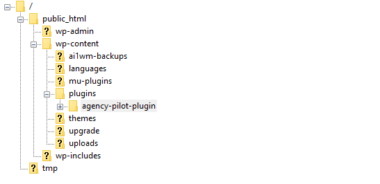
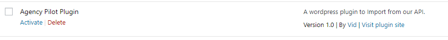
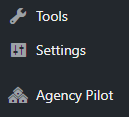
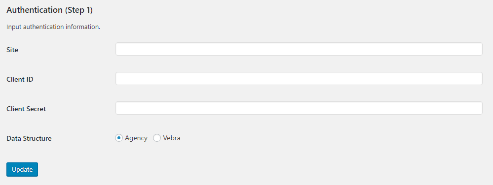

Alcium Software LTC.
This document is to give insights of our plugin to the user of our plugin so it can help them further their wordpress website. This document also provides details into how to set up the cPanel so that the data import is smooth. The web developers can use this document to get a better understanding of the data types and structure of the imported data.
Note: This plugin is a Proprietary Software 👼.
2.1 Requirements
2.2 Design
2.3 Implementation
2.4 CRON Jobs
2.5 Updates
In order to run the plugin smoothly you have to set your wordpress database execution time to be a number that is higher than 10 minutes (600+ seconds).
One way of setting this to add or edit the
set_time_timit in wp-config.php in the wordpress root folder.
//Setting max execute timer to be 900 seconds as mapping of data takes more than 30 seconds.
_set_time_limit(900);If your web-host is blocks this by default then contact your hosting company so the data integrity can be maintained.
Design is very minimal in this plugin as it is mainly aimed at making the import process easier for our clients.
There are authentication fields where the details of the client are entered, this is confidential so keep it safe and secure. These authentication credentials are used to gain access to our API.
This step contains a button, when clicked, checks through your details and then imports and map the data into your wordpress database. The structure of the database depends on your choice on the step 01.
This section contains a button called update properties which on click will fetch all the properties which have been changed on the day and update them in the database.
Get your agency pilot authentication, you will also receive a zipped folder which contains the plugin. The content of the zipped file is then to be placed within your wordpress plugin folder. You can use an FTP client such as FileZilla to do this.

Once transfer of folder completes you can navigate to wordpress dashboard. And then go into plugins menu, you should see Agency Pilot Plugin in the list of plugins.

Click Activate to active the plugin, once you active you should see Agency Pilot on your dashboard side menu.

When you navigate into the plugin, you’ll be asked to enter some authentication credentials agency pilot have provided for you. Here are the basic credentials you expect to have in order to use the plugin.

For the first time that the plugin is activated you need to click the Get Properties in order to get the data initially. Moreover, when you wish to change the data structure then you need to click to update and the Get Properties. If you wish to edit your credentials then you can do that by clicking Edit Your Details.
Note: You’ll be prompted with essential steps that have been taken by the plugin. i.e Auth token fetched.
There are currently 2 CRON jobs with our plugin.
Note: The CRON Jobs is pre-built meaning you do not have to set anything up however, make sure your web-host allows it.
If there are any updates for our plugin, we’ll contact the client.
Note: The Database tables should not be tampered with.